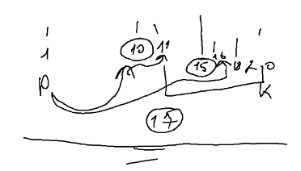

З клавіатури вводитяться числа поки не буде введено 0. Знайти суму чисел.
З клавіатури вводитяться числа поки не буде введено 0. Знайти добуток чисел.
2.1. З клавіатури поступово вводяться символи поки не буде введено символ «а». Вивести рядок символів
у зворотному порядку.
З клавіатури поступово вводяться числа. Знайти суму перших N парних чисел.
4.1. З клавіатури вводяться два числа N i M "(N < M)". Вивести на екран числа
N---M
N+1 --- M-1
N+2 --- M-2
N+3 --- M-3
. . . . . .
Виведення завершити коли число справа стане меншим за число зліва.
На екрані виводиться меню:
1. Сказати «Привіт».
2. Сказати «Зачекай».
3. Сказати «До побачення».
4. Вихід.
Шляхом вибору пунктів меню виводити відповідні повідомлення, поки не буде вибрано пункт номер 4.
З клавіатури вводиться число. Знаходити суму цифр до тих пір. Поки сума не стане більшую за 20.
Користувач загадує натуральне число від 1 до N. Шляхом задавання мінімальної кількості запитань знайти вказане число (застосувати бінарний пошук, на кожному кроці якого інтервал пошуку зменшується на 2 шляхом порівняння з елементом, який знаходиться у центрі поточного інтервалу).
З клавіатури вводиться вартість одиниці товару. Поки користувач не введе суму грошей, яка достатня для купівлі товару або не відмовиться від купівлі давати можливість вводити суму грошей.
З клавіатури вводяться поступово числа. Знайти два найменші числа. Ввід здійснюється до тих пір, поки різниця між такими числами є більшою за 5.
Морський бій. Комп’ютер випадковим чином розміщує одиночний корамель на полі 5*5. З клавіатури поступово вводяться координати пострілу поки корабель не буде потоплено. Спробуйте відоразити гру графічно.
Тир. На полі з 10 клітинок розміщують зайця. За один крок заєць може стрибати на відстань від 0 до 3 позицій у будь-якому напрямку. З клавіатури вводиться позиція пострілу. Гра продовжується поки у користувача не закінчаться патрони (кількість вводиться з клавіатури) або не буде влучання. Спробуйте відоразити гру графічно.
Танчики. На полі з 10 клітинок розміщують танк. За один крок танк може переміщуватися на відстань від 0 до 1 у будь-якому напрямку (в межах поля). При влучанні броня танка пошкоджується на 30 балів (всього 100). Гра продовжується поки або не закінчаться снаряди (кількість вводиться з клавіатури) або не буде влучання. Спробуйте відоразити гру графічно.
Спробуйте модифікувати попередню гру для випадку, коли танк також може стріляти по вашій гарматі (ваша гармата також знаходиться на цьому ж полі).